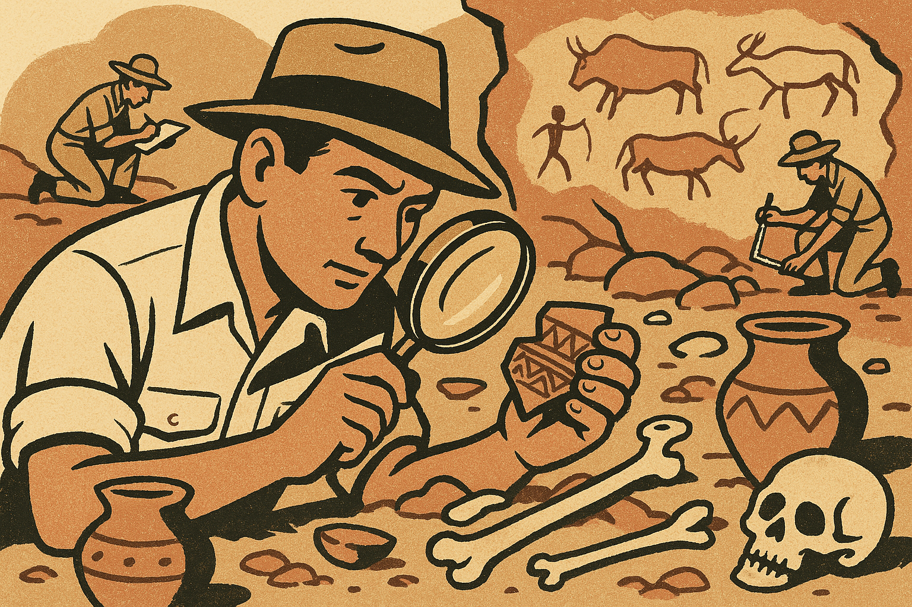

A forthcoming book by Mitch Kelly
Centrifuge
Inside the Emerging AI Organization
AI does not merely make organizations faster. It exposes what they actually are.
Book detailsPublishing September 2026

BooksIdeasPeople
The Imprint
Unruly Chain
Books for a more interesting tomorrow
Unruly Chain publishes books that ask difficult questions about technology, organizations, science, and human possibility.
About Unruly Chain →Some chains hold us back.
This one pulls ideas forward.
This one pulls ideas forward.


Announced titles, contents, formats, and publication dates are subject to change.